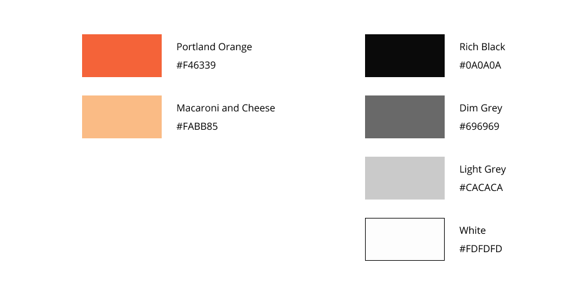
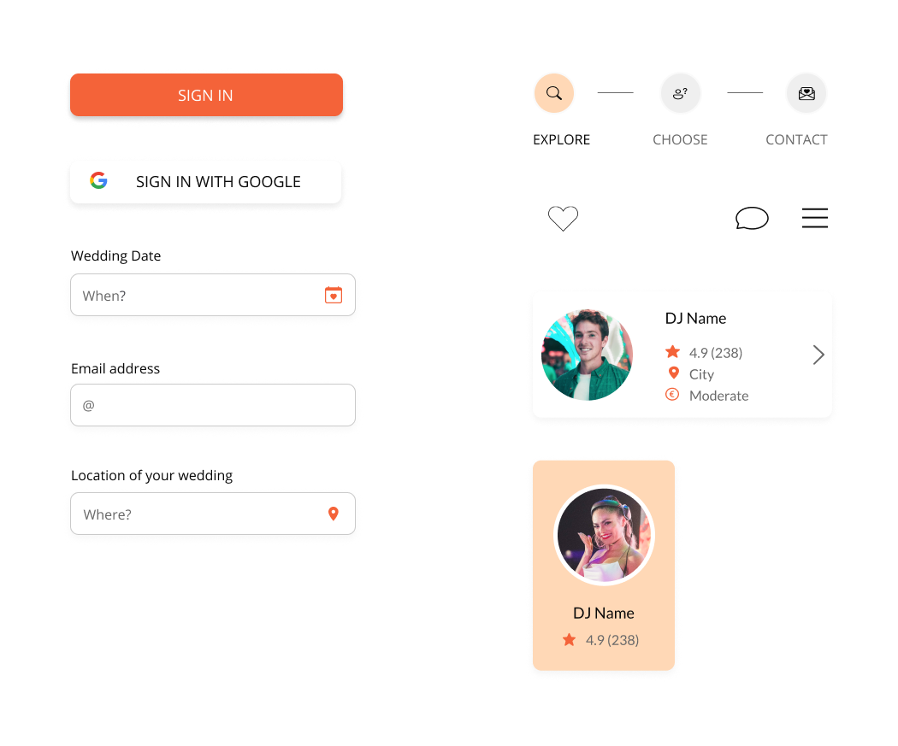
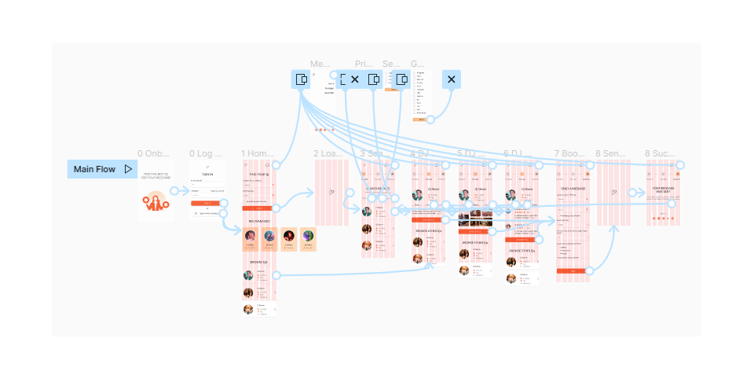

Wedding DJ application
I created this project for the Google UX design course. The goal was to create an application which will help to find and contact wedding DJs quickly without ineffective browsing the internet.

Understanding the problem
Is this application really important? How would it help users? I asked myself.
I conducted user research to understand users, know more details, and identify problems. At the same time I was able to define the goal of the application. I questioned 5 participants. They were people between the ages 18-62 who reside all over the world.
I was focused on
- understanding the user goals and needs,
- creating a user journey,
- determining the success of the task.
I abstracted pain points from the interview quotes, and mapped out an end-to-end experience users would have.
The problem
There are too many DJs on the internet. All of them have their own website or social media profiles. profile.
There is no easy way to contact the selected DJs.
The goal
To create a straightforward workflow to send a request to the DJ without long browsing and searching for the contact.
The new workflow should speed up the process of wedding DJs booking.
Who is the average user?
I also created a persona which should help to identify key audience segments.
My persona is called Alice.
- Age: 29 years
- Education: university degree
- Occupation: marketing field
Alice is a bride who needs to book a DJ who will follow the budget and respect her style because her wedding needs to represent her values.

Goals
- Wedding which represents her and hers boyfriend’s values.
- To enjoy the wedding without being afraid of unpredictable expenses.
Frustrations
- There are too many options.
- She is afraid the DJ will cost a lot of money which they actually do not have.
- We are tight on budget.
User journey map
I learned that users are worried about the price of services provided by the selected DJ. They are also struggling to find a proper option to contact DJs.
Based on interviews, I created the below user journey map which includes tasks, actions, and feelings of users. I added opportunities which the application can bring to life.

Experience map
This is a visualization of an entire end-to-end experience that users go through in order to accomplish the goal. I created this workflow using Draw.io.

Wireframing the solution
Based on the above problems identified, I worked towards addressing these pains by coming up with potential solutions which should be included in the application:
- Filters - to help users to select DJs who meet requirements
- Ratings - to show how the other users were satisfied with the DJ
- Messages - users can send a message directly in the app. Messages will be stored in one place which will speed up the process
- Profiles - users can learn more about the selected DJ from her or his profile which includes a short description, technical details, photos, and reviews
Mockup
Colors
I created a few color palettes. At the end, I chose a minimalistic color palette using different shades of grey and orange.
Components
I continued with components creation in Figma to be able to keep the design consistent. Components also help me to speed up the design process. I started with designing buttons and inputs. Those are key components for the wedding application.
Here you will find some components that I have used to design the application.
I also created a simple illustration in Adobe Illustrator for the get started screen.
Get started screen
This screen was created to encourage users to use the application and remind them of the goal.

Sign in
Users would fill in a simple sign in form. They can also sign in with their Google accounts.

Search results
Users can easily filter search results by genre, price, and additional services.

Other screens

Prototyping
At the end, I connected all the screens to create a high-fidelity prototype.
